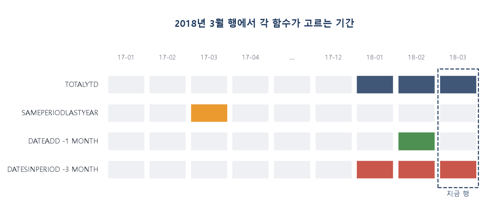
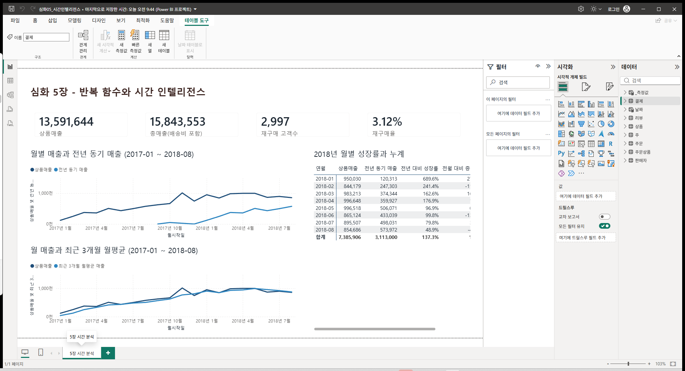

5장. DAX 심화 ② 반복 함수와 시간 인텔리전스
학습 목표
- SUMX 같은 반복 함수로 행마다 계산한 뒤 더한다.
- FILTER 와 VALUES 로 "조건에 맞는 고객" 을 세어 재구매 고객을 찾는다.
- 시간 인텔리전스 함수로 누계, 전년 동기, 전월 대비, 최근 3개월을 계산한다.
- 시각적 개체 필터로 분석 기간을 정한다.
5-1. 반복 함수 - SUMX
SUM 은 열 하나를 더한다. 그런데 "가격 + 배송비" 처럼 행마다 계산한 값을 더하려면?
총매출(배송비 포함) = SUMX('주문상품', '주문상품'[가격] + '주문상품'[배송비])
SUMX(테이블, 식) 은 테이블의 행을 하나씩 돌면서 식을 계산하고, 그 결과를 모두 더한다. 이름 끝의 X 는 반복(iterate)한다는 표시다. 같은 무리에 AVERAGEX, COUNTX, MAXX 등이 있다.
| 방법 | 장점 | 단점 |
|---|---|---|
| Power Query 에서 열 추가 후 SUM | 단순하다 | 열이 모델에 저장돼 파일이 커진다 |
| 계산 열 후 SUM | DAX 로 바로 만든다 | 역시 저장 공간을 쓴다 |
| SUMX 측정값 | 저장하지 않는다, 필터에 맞게 계산 | 아주 큰 표에서는 느릴 수 있다 |
결과는 15,843,553 (상품매출 13,591,644 + 배송비 2,251,910).
평균 배송일수 = AVERAGE('주문'[배송일수])
배송일수는 2장에서 만든 열이다. 빈 값(미배송)은 AVERAGE 가 알아서 빼므로 12.5일이 된다.
5-2. FILTER 와 VALUES - 재구매 고객
"두 번 이상 주문한 고객은 몇 명인가?" 는 고객마다 주문 수를 세 본 뒤 조건에 맞는 고객을 세야 한다.
재구매 고객수 = COUNTROWS(FILTER(VALUES('주문'[고객ID]), CALCULATE([주문수]) > 1))
안쪽부터 읽는다.
VALUES('주문'[고객ID])- 지금 필터에서 보이는 고객ID 목록 (중복 없이). 표 하나가 된다.FILTER(표, 조건)- 그 목록을 한 줄씩 돌며 조건이 참인 줄만 남긴다. FILTER 도 반복 함수다.CALCULATE([주문수]) > 1- 지금 돌고 있는 고객의 주문 수가 1보다 큰가?COUNTROWS(…)- 남은 고객 수.
CALCULATE 를 왜 감쌌을까? FILTER 가 한 줄씩 돌 때 "지금 고객" 은 행 하나일 뿐, 필터가 아니다.
[주문수]측정값은 필터를 보고 계산하므로, 그대로 쓰면 모든 줄에서 전체 주문수가 나온다.CALCULATE로 감싸면 지금 행의 값(이 고객ID)을 필터로 바꿔서 계산한다. 이것을 컨텍스트 전환이라고 한다. 사실 측정값을 반복 함수 안에서 부르면 자동으로 CALCULATE 가 감싸지지만, 일부러 써 두면 읽는 사람이 알아보기 쉽다.
재구매율 = DIVIDE([재구매 고객수], [고객수])
결과는 2,997명, 3.12%. 100명 중 3명만 다시 산다. Olist 고객 대부분이 한 번 사고 떠난다는 뜻이다.
5-3. 시간 인텔리전스
날짜 테이블이 있고 날짜 테이블로 표시 되어 있으면, 기간을 옮겨 계산하는 함수를 쓸 수 있다.

매출 YTD = TOTALYTD([상품매출], '날짜'[Date])
전년 동기 매출 = CALCULATE([상품매출], SAMEPERIODLASTYEAR('날짜'[Date]))
전년 대비 성장률 = DIVIDE([상품매출] - [전년 동기 매출], [전년 동기 매출])
전월 매출 = CALCULATE([상품매출], DATEADD('날짜'[Date], -1, MONTH))
전월 대비 증감률 = DIVIDE([상품매출] - [전월 매출], [전월 매출])
최근 3개월 월평균 매출 = CALCULATE([상품매출], DATESINPERIOD('날짜'[Date], MAX('날짜'[Date]), -3, MONTH)) / 3
| 함수 | 고르는 날짜 | 예: 2018년 3월 행에서 |
|---|---|---|
TOTALYTD |
그해 1월 1일 ~ 지금까지 | 2018-01-01 ~ 2018-03-31 |
SAMEPERIODLASTYEAR |
1년 전 같은 기간 | 2017년 3월 |
DATEADD(…, -1, MONTH) |
한 달 전 | 2018년 2월 |
DATESINPERIOD(…, MAX, -3, MONTH) |
마지막 날에서 3개월 거슬러 | 2018-01-01 ~ 2018-03-31 |
모두 CALCULATE 의 조건 자리에 들어가 날짜 필터를 다른 기간으로 바꾼다. 4장의 CALCULATE 와 같은 원리다.
5-4. 분석 기간 정하기 - 시각적 개체 필터
행렬 행에 날짜[연월]을 넣고 위 측정값들을 넣으면 이상한 숫자가 보인다.
- 2016년은 주문이 300여 건뿐이고 11월은 0건이다. 그래서 2017년의 전년 대비 성장률이 수십만 % 가 된다.
- 2018년 9~10월은 주문이 수십 건뿐이다. 데이터를 모은 시점에 끝난 달이라 거의 비어 있다.
실제 데이터에는 이런 불완전한 기간이 흔하다. 분석할 기간을 정해 그 밖은 빼자.
- 꺾은선형 차트를 고른다.
- 필터 창 → 이 시각적 개체의 필터 에 데이터 창의 날짜[Date] 를 끌어다 놓는다.
- 필터 카드를 펼쳐 필터 형식 을 고급 필터링 으로 바꾼다.
- 다음 값일 경우 항목 표시 첫 칸
다음 기간 이후·2017-01-01, 및 을 고른 채 둘째 칸다음 기간 이전·2018-08-31→ 오른쪽 아래 필터 적용. (시각은 오전 12:00 그대로) - 행렬에는 같은 기간 필터에 더해 날짜[연도] = 2018 필터를 건다. 2018년은 전년(2017년)과 비교할 수 있는 해다.

시각적 개체 필터는 그 차트에만 걸린다. 카드의 전체 매출은 그대로 전체 기간이다. 페이지 전체 또는 모든 페이지에 걸려면 필터 창의 이 페이지의 필터 / 모든 페이지의 필터 칸에 넣는다.
정리
SUMX(테이블, 식)처럼 X 로 끝나는 함수는 행마다 식을 계산한 뒤 모은다.FILTER(VALUES(열), 조건)= 조건에 맞는 값 목록. 반복 함수 안에서 측정값을 쓰면 컨텍스트 전환으로 그 행의 필터에서 계산된다.- 시간 인텔리전스(
TOTALYTD,SAMEPERIODLASTYEAR,DATEADD,DATESINPERIOD)는 날짜 필터를 다른 기간으로 바꾸는 CALCULATE 조건이다. 날짜 테이블로 표시가 필요하다. - 불완전한 기간은 시각적 개체 필터로 빼고 분석한다.
확인 문제
평균 주문 배송비 = AVERAGEX(VALUES('주문상품'[주문ID]), [배송비])를 만들어 보자.[배송비] / [상품주문수]와 값이 같은가?- 2018년 8월의 상품매출과 전년 동기 매출은 각각 얼마인가? 전년 대비 성장률은?
- 2018년 8월의 매출 YTD 는 얼마인가? 2018년 행렬의 상품매출을 1~8월 더한 값과 같은지 확인하자.
- 재구매 고객 기준을 "세 번 이상 주문" 으로 바꾸면 몇 명인가?